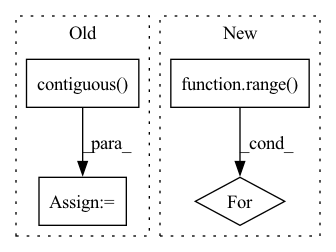

Pattern ID :20712
Before Change
valid_pixels, valid_coords, train_cam_tf, sample_ray_num, coarse_sample_pnum, 200, 200, train_focal, near_t, far_t
)
coarse_cams = coarse_samples[:, -1, :-3].contiguous()
gt_rgb = coarse_samples[:, -1, -3:].contiguous()
coarse_samples = coarse_samples[:, :-1, :].contiguous()
coarse_rgbo = coarse_net.forward(coarse_samples)
coarse_rendered, normed_weights = NeRF.render(coarse_rgbo, coarse_lengths, coarse_samples[:, :, 3:6].norm(dim = -1))
_, fine_lengths = inverseSample(normed_weights, coarse_cams, coarse_lengths, fine_sample_pnum, near_t, far_t)
fine_samples, fine_lengths = NeRF.coarseFineMerge(coarse_cams, coarse_lengths, fine_lengths) // (ray_num, 192, 6)
// 此处存在逻辑问题，需要第二次sort，并且RGB需要整理出来
fine_rgbo = fine_net.forward(fine_samples)
fine_rendered, _ = NeRF.render(fine_rgbo, fine_lengths, fine_samples[:, :, 3:6].norm(dim = -1))
opt.zero_grad()
loss:torch.Tensor = loss_func(coarse_rendered, gt_rgb) + loss_func(fine_rendered, gt_rgb)
train_timer.toc()
loss.backward()After Change
train_result = render_image(fine_net, train_cam_tf[0], 200, test_focal, near_t, far_t, fine_sample_pnum)
test_results = []
test_loss = torch.zeros(1).cuda()
for i in range( 4):
test_result = render_image(fine_net, test_cam_tf[i * 10], 200, test_focal, near_t, far_t, fine_sample_pnum)
test_results.append(test_result)
test_loss += loss_func(test_result, testset[i * 10].cuda())
render_timer.toc()In pattern: SUPERPATTERN
Frequency: 3
Non-data size: 4
Instances Fragment ID: 66614697
Project Name: enigmatisms/nerf
Commit Name: 5bf2199afe3d4eff27be923b0e6d62a3118af597
Time: 2022-04-13
Author: 984041003@qq.com
File Name: train.py
M Class Name: AnonimousClass
N Class Name: AnonimousClass
M Method Name: main(0)
N Method Name: main(0)
M Parent Class:
N Parent Class:
M File Name: train.py
N File Name: train.py
M Start Line: 66
M End Line: 188
N Start Line: 73
N End Line: 196
Before Change
xyz, point_features = torch.split(points, [3, 1], dim=-1)
out = [(point_features, xyz)] + out
xyz = xyz.unsqueeze(0).contiguous()
indices = furthest_point_sample(xyz, cfg.n_keypoints).squeeze(0).long()
keypoints = points[indices]
keypoints_xyz, keypoints_features = torch.split(keypoints, [3, 1], dim=-1)
voxel_features_i, voxel_coords_i = out[2]
After Change
xyz, point_features = torch.split(points, [3, 1], dim=-1)
keypoints_xyz, keypoints_features = self.sample_keypoints(xyz, point_features)
out = [(point_features, xyz)] + out
for i in range( len(self.cfg.strides)):
voxel_features_i, voxel_coords_i = out[i]
voxel_coords_i = voxel_coords_i.unsqueeze(0).contiguous()
voxel_features_i = voxel_features_i.unsqueeze(0).permute(0, 2, 1).contiguous()
keypoints_xyz = keypoints_xyz.unsqueeze(0).contiguous() Fragment ID: 66614683
Project Name: jhultman/vision3d
Commit Name: b58d5a394a6cc04a99daeaa04b0ef90f050f8582
Time: 2020-01-17
Author: 27909223+jhultman@users.noreply.github.com
File Name: pvrcnn/main.py
M Class Name: PV_RCNN
N Class Name: PV_RCNN
M Method Name: forward(2)
N Method Name: forward(2)
M Parent Class: nn.Module
N Parent Class: nn.Module
M File Name: pvrcnn/main.py
N File Name: pvrcnn/main.py
M Start Line: 120
M End Line: 130
N Start Line: 143
N End Line: 151
Before Change
// out = self.conv2(out, batch)
// out = self.conv3(out, batch) // n_points x length_features
// reshape back into batch
out = out.contiguous() .view(batch_size, n_vertices, -1)
// aggregate features from vertices
out = out.max(dim=-2, keepdim=False)[0]After Change
if self.config["skip_connections"]:
aggr_features.append(self.global_pool(out, batch, batch_size))
for conv_id in range( 1, self.config["conv_depth"]):
out = self.conv_layers[conv_id](out, batch)
if self.config["skip_connections"]:
aggr_features.append(self.global_pool(out, batch, batch_size))
Fragment ID: 66614689
Project Name: maria-korosteleva/garment-pattern-estimation
Commit Name: fd8ff19db9d988e5ac9788f8b67560dab3cc7c33
Time: 2020-09-23
Author: mariako@kaist.ac.kr
File Name: nn/net_blocks.py
M Class Name: EdgeConvFeatures
N Class Name: EdgeConvFeatures
M Method Name: forward(2)
N Method Name: forward(2)
M Parent Class: nn.Module
N Parent Class: nn.Module
M File Name: nn/net_blocks.py
N File Name: nn/net_blocks.py
M Start Line: 106
M End Line: 125
N Start Line: 137
N End Line: 161